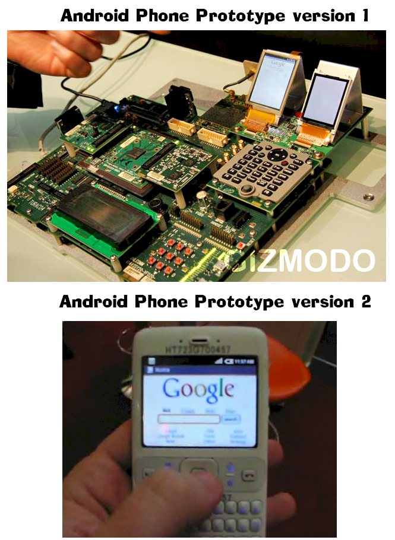

Prototyping
Software prototypes (unsophisticated demonstration versions) are developed to find out what users actually want from the software. It is common for customers to not really know what they want until they see it working; and it's also common for great new ideas to spring from seeing a prototype version.
Below: two versions of a Qualcomm mobile phone protype...

|
Back to the IT Lecture Notes index
Back to the last page you visited
Split off Models page 26 MArch 2010
Last changed:
November 23, 2010 12:32 PM
VCE IT Lecture notes © Mark Kelly 2001-